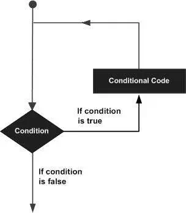

C# - Loops
There may be a situation, when you need to execute a block of code several number of times. In general, the statements are executed sequentially: The first statement in a function is executed first, followed by the second, and so on.
Programming languages provide various control structures that allow for more complicated execution paths.
A loop statement allows us to execute a statement or a group of statements multiple times and following is the general form of a loop statement in most of the programming languages:

C# provides following types of loop to handle looping requirements. Click the following links to check their detail.
|
Loop Type |
Description |
|
while loop |
It repeats a statement or a group of statements while a given condition is true. It tests the condition before executing the loop body. |
|
for loop |
It executes a sequence of statements multiple times and abbreviates the code that manages the loop variable. |
|
do...while loop |
It is similar to a while statement, except that it tests the condition at the end of the loop body |
|
nested loops |
You can use one or more loop inside any another while, for or do..while loop. |
Loop Control Statements
Loop control statements change execution from its normal sequence. When execution leaves a scope, all automatic objects that were created in that scope are destroyed.
C# provides the following control statements. Click the following links to check their details.
|
Control Statement |
Description |
|
break statement |
Terminates the loop or switch statement and transfers execution to the statement immediately following the loop or switch. |
|
continue statement |
Causes the loop to skip the remainder of its body and immediately retest its condition prior to reiterating. |
Infinite Loop
A loop becomes infinite loop if a condition never becomes false. The for loop is traditionally used for this purpose. Since none of the three expressions that form the for loop are required, you can make an endless loop by leaving the conditional expression empty.
Example
usingSystem;
namespaceLoops
{
classProgram
{
staticvoidMain(string[] args)
{
for(;;)
{
Console.WriteLine("Hey! I am Trapped");
}
}
}
}
When the conditional expression is absent, it is assumed to be true. You may have an initialization and increment expression, but programmers more commonly use the for(;;) construct to signify an infinite loop.